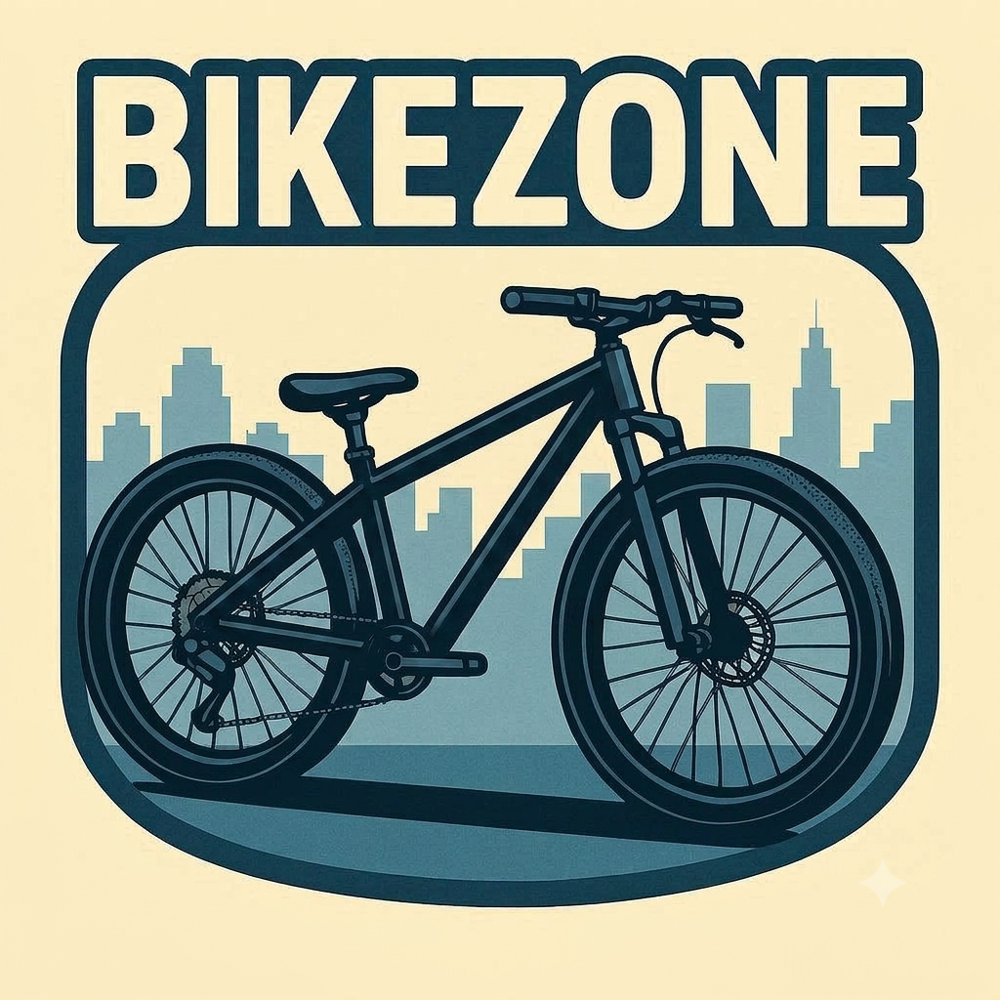
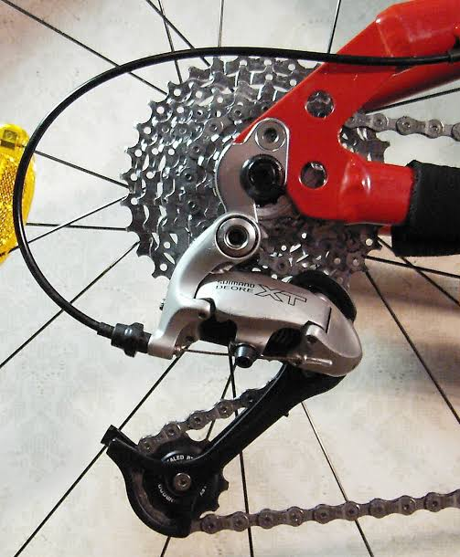
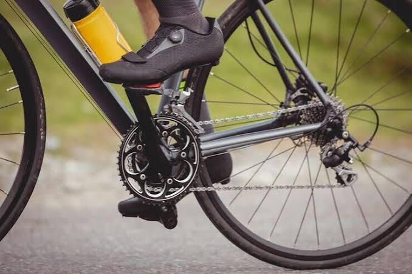
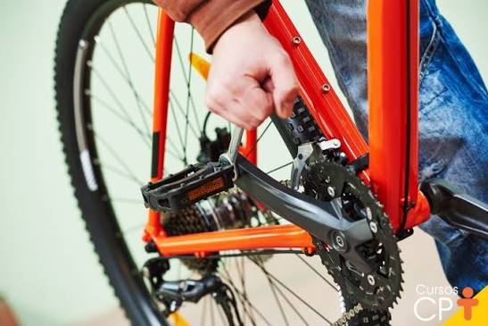

Meu primeiro post
Por: Vitor Fontes Landin
Boas-vindas ao meu novo blog! Aqui vou compartilhar meus conhecimentos sobre o mundo das bikes.
Vou compartilhar conhecimentos sobre peças de bikes e bikes

Por: Vitor Fontes Landin
Boas-vindas ao meu novo blog! Aqui vou compartilhar meus conhecimentos sobre o mundo das bikes.
Câmbio: permite trocar as marchas da bicicleta, deixando a pedalada mais fácil ou mais pesada.
Corrente: transmite a força dos pedais para a roda traseira, fazendo a bicicleta se movimentar.
Freios: servem para diminuir a velocidade e parar a bicicleta com segurança.
Pedais: recebem a força dos pés e ajudam a movimentar a corrente e as rodas.
Todas essas peças trabalham juntas. Por isso, cuidar e fazer a manutenção da bicicleta é importante para ter um pedal mais seguro e tranquilo.
Por que fazer a manutenção na minha bike?
Fazer a manutenção da bicicleta é importante para mantê-la segura e funcionando corretamente. Verificar os freios, pneus, corrente, marchas e outras peças ajuda a evitar problemas durante o passeio. Além disso, a manutenção aumenta a durabilidade das peças, melhora o desempenho da bicicleta e pode evitar gastos maiores com consertos. Por isso, cuidar da sua bike regularmente é essencial para pedalar com mais segurança e tranquilidade.

Conselhos para um bom funcionamento do câmbio da sua bike
A manutenção do câmbio é simples: limpe a corrente, o cassete e as roldanas com desengraxante e seque bem; depois, aplique uma gota de lubrificante específico em cada elo e remova o excesso com um pano; por fim, ajuste a tensão do cabo no regulador para as marchas trocarem sem barulho. Se você não fizer isso, a sujeira vira uma pasta que consome as peças rapidamente, as marchas começam a pular sozinhas e o sistema pode travar sob esforço, quebrando o câmbio e causando um acidente.

Conselhos para um bom funcionamento dos freios da sua bike
Para cuidar dos freios da bike, inspecione e troque pastilhas finas (com menos de 1 mm) ou sapatas gastas, limpe os discos com álcool isopropílico e os aros com água e sabão neutro, e ajuste a tensão dos cabos para o manete não ficar fundo. Alinhe as pinças ou sapatas para não rasparem na roda, faça a sangria do fluido caso o freio hidráulico perca pressão, evite tocar nos discos com as mãos sujas e sempre faça um teste rápido em baixa velocidade antes de rodar.

Conselhos para um bom funcionamento da corrente da sua bike
Para cuidar dos freios da bike, inspecione e troque pastilhas finas (com menos de 1 mm) ou sapatas gastas, limpe os discos com álcool isopropílico e os aros com água e sabão neutro, e ajuste a tensão dos cabos para o manete não ficar fundo. Alinhe as pinças ou sapatas para não rasparem na roda, faça a sangria do fluido caso o freio hidráulico perca pressão, evite tocar nos discos com as mãos sujas e sempre faça um teste rápido em baixa velocidade antes de rodar.

Conselhos para um bom funcionamento dos pedais da sua bike
A manutenção dos pedais é simples: limpe a parte externa com pano ou escova para tirar a sujeira, verifique se estão bem rosqueados no pedivela e pingue uma gota de óleo nas articulações ou encaixes do mola (caso use pedal de encaixe). Sem essa manutenção, o acúmulo de sujeira gera ruídos irritantes ao pedalar, a rosca pode emperrar ou folgar, os rolamentos internos se desgastam até travar e o pedal pode soltar ou quebrar durante a força, provocando uma queda.